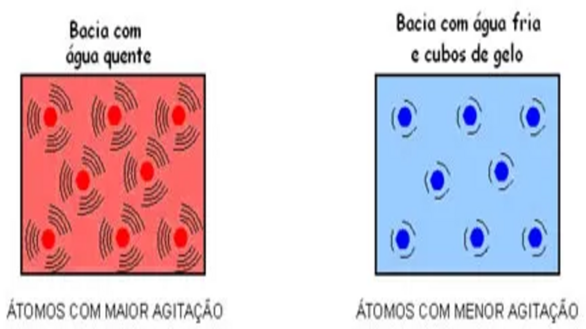
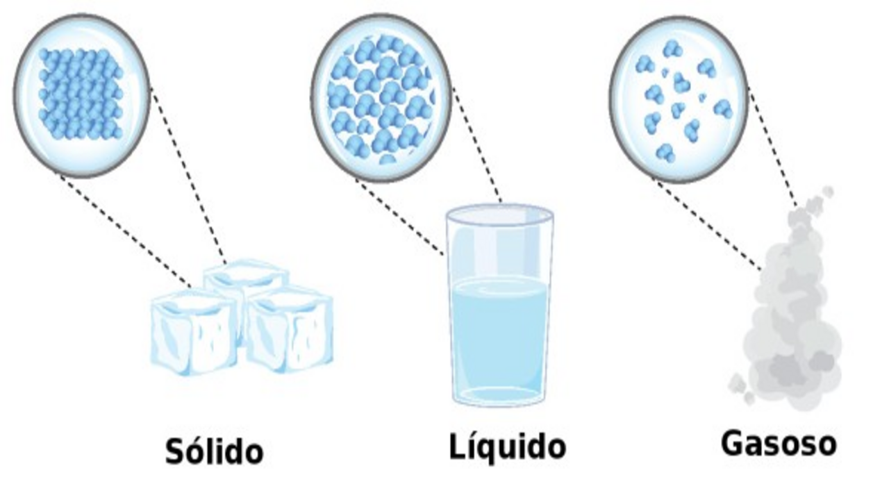
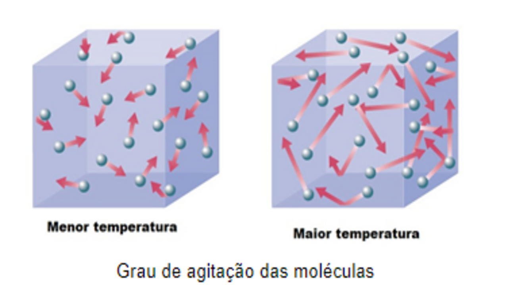
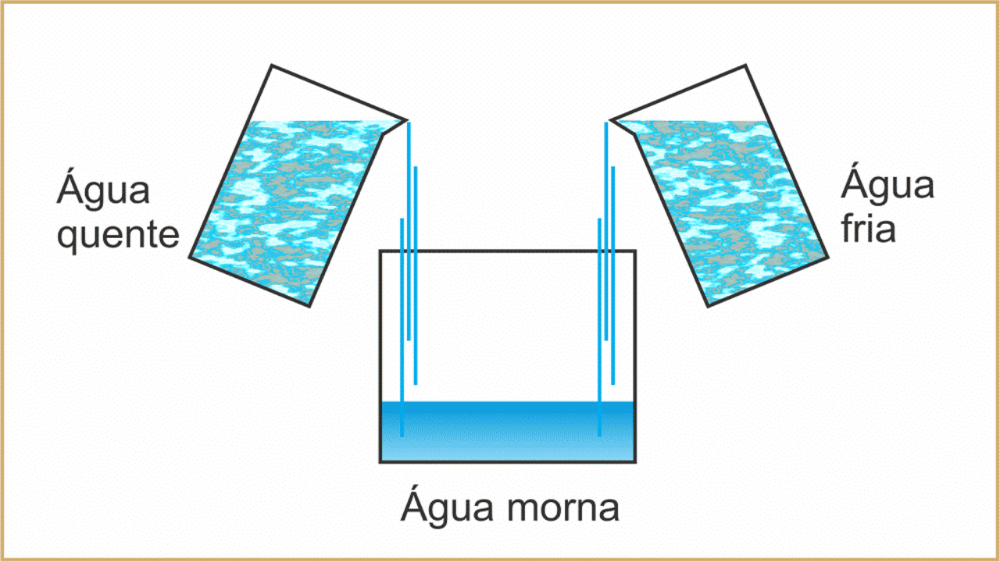
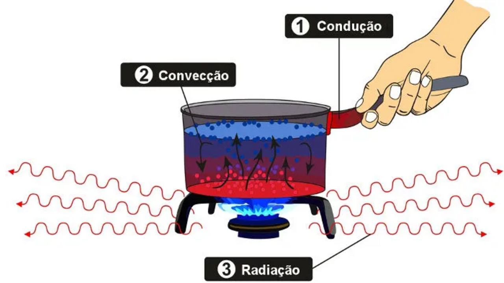
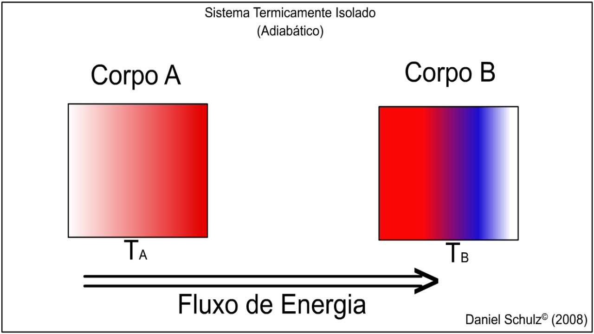
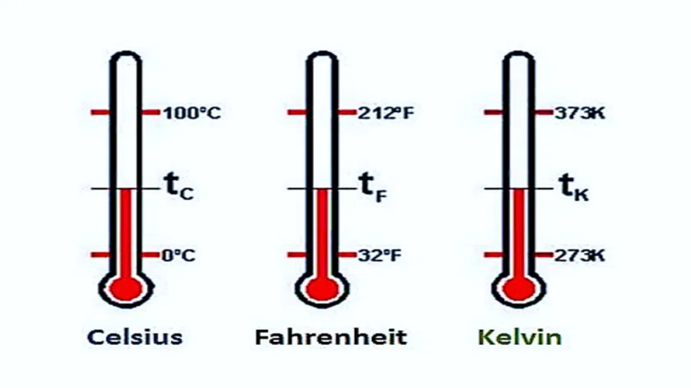
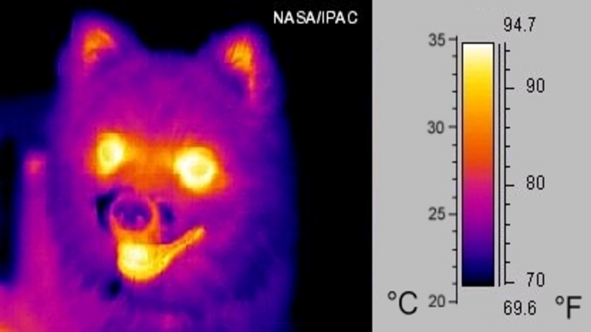
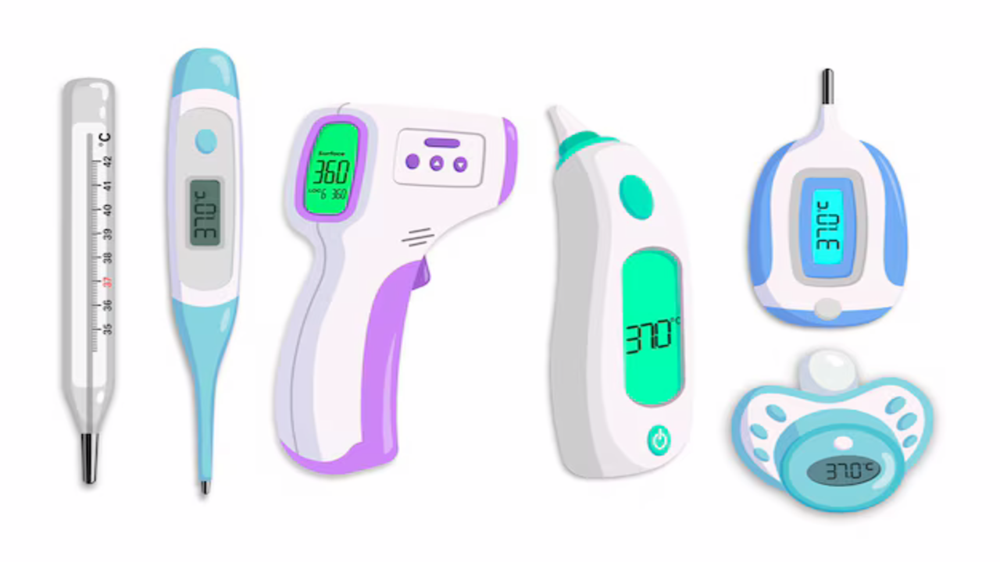

Temperatura
Temperatura é a grandeza física que indica o grau de agitação das partículas de um corpo, representando seu nível de calor ou frio.
Temperatura é a grandeza física que indica o grau de agitação das partículas de um corpo, representando seu nível de calor ou frio.
Temperatura é a grandeza física que mede o grau de agitação das partículas que compõem um corpo. Quanto maior a agitação molecular, maior a temperatura; quanto menor, mais frio o corpo se encontra. Como Celsius, Fahrenheit e Kelvin.

Refere-se ao movimento das partículas da água, causado por correntes, mexidas ou outros estímulos, que promove mistura e homogeneização do líquido.

A água pode existir em três estados: sólido (gelo), líquido (água) e gasoso (vapor), dependendo da temperatura e pressão.

O grau de agitação indica a intensidade do movimento das partículas de um líquido dentro de um recipiente.
Calor é a forma de energia que se transfere de um corpo para outro devido à diferença de temperatura entre eles. Essa transferência ocorre do corpo mais quente para o mais frio, até que se atinja o equilíbrio térmico. O calor pode se propagar por condução, convecção ou radiação.

Calorimetria é o estudo da transferência de calor entre corpos e a medição da quantidade de energia térmica envolvida em processos físicos ou químicos.

Transferência de calor é o processo de passagem de energia térmica de um corpo mais quente para outro mais frio.

Um sistema térmico é um conjunto de elementos que troca ou armazena energia na forma de calor, controlando a temperatura e o fluxo de energia.
A temperatura é medida com o uso de termômetros, instrumentos que indicam o nível de calor ou frio de um corpo ou ambiente. A medição pode ser feita por contato direto com o objeto ou ambiente, ou sem contato, no caso de sensores infravermelhos. Os valores obtidos são expressos em escalas como graus Celsius (°C), Fahrenheit (°F) ou Kelvin (K).

As escalas Celsius, Fahrenheit e Kelvin são formas de medir a temperatura, cada uma com referência e unidade diferentes.

Infravermelho é uma radiação eletromagnética invisível que transmite calor e pode ser usada para medir temperatura à distância.

Termômetro é um instrumento usado para medir a temperatura de corpos ou ambientes.